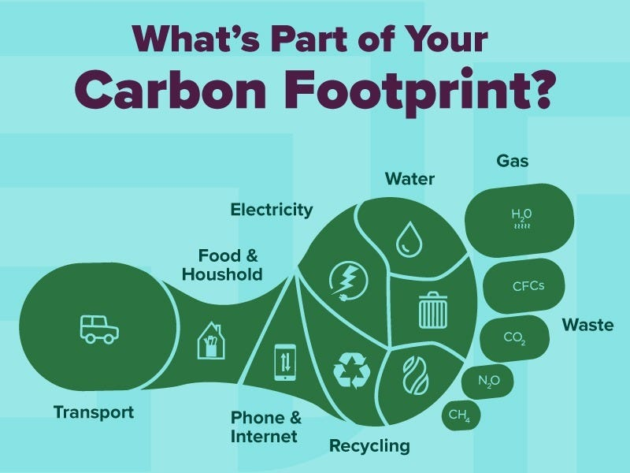

Welcome to the Carbon Footprint Calculator

Learn more about your carbon footprint and find ways to reduce it, both personally and within your community.
Why Should We Reduce Our Carbon Footprint?
Reducing our carbon footprint is essential for combating climate change and protecting our planet. High carbon emissions contribute to global warming, leading to severe environmental consequences such as rising sea levels, extreme weather conditions, loss of biodiversity, and disruption of ecosystems. By lowering our carbon output, we can:
- Mitigate climate change impacts.
- Improve air and water quality.
- Conserve natural resources.
- Create a more sustainable future for the next generations.
How LGS OPF is Reducing Its Carbon Footprint
At LGS OPF, we are committed to environmental sustainability through various proactive measures, including:
- Green Energy Initiatives: Installing solar panels to harness renewable energy and reduce dependency on fossil fuels.
- Efficient Waste Management: Implementing comprehensive recycling programs for paper, plastic, and electronics within the school premises.
- Eco-Friendly Transportation: Encouraging carpooling among students and staff, as well as promoting the use of bicycles to reduce emissions from vehicles.
- Digital Transformation: Transitioning to paperless systems for assignments, circulars, and reports to minimize paper waste and deforestation.
- Tree Plantation Drives: Organizing regular tree-planting events to increase green cover and improve air quality.
- Sustainability Workshops: Conducting awareness sessions and workshops on climate action to empower students with knowledge and tools for sustainable living.
- Energy Efficiency: Upgrading to LED lighting and energy-efficient appliances throughout the campus to lower energy consumption.